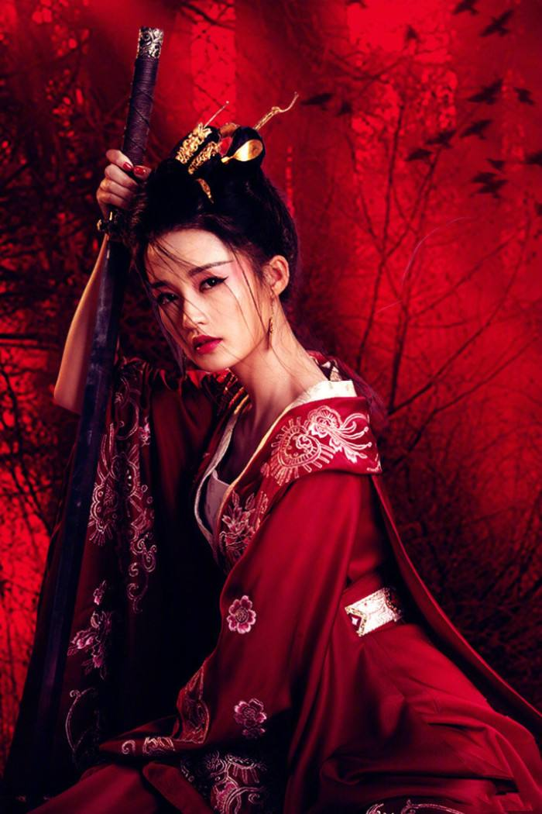
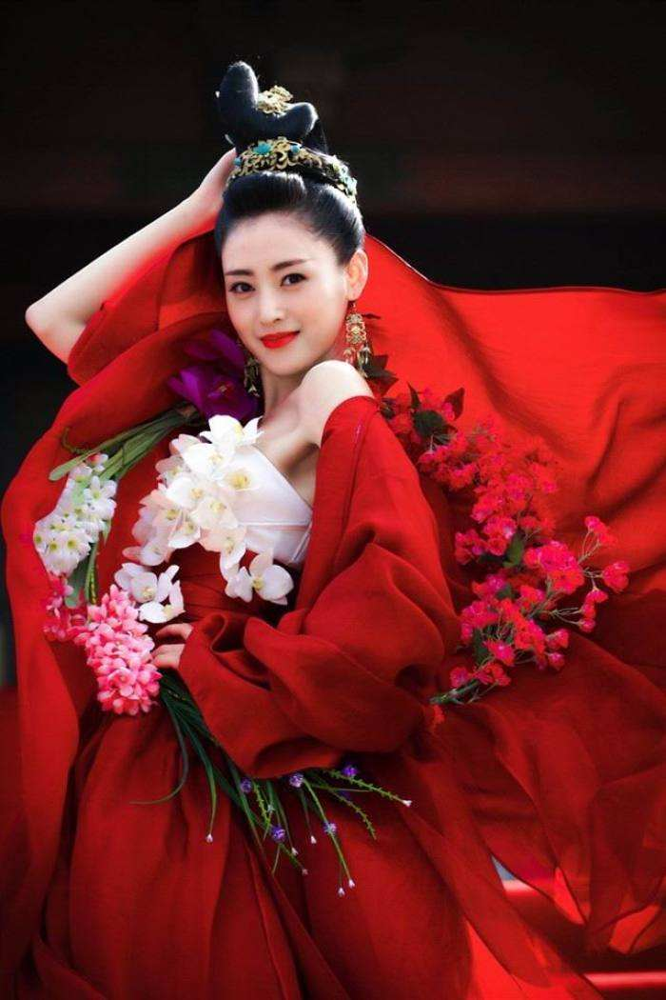
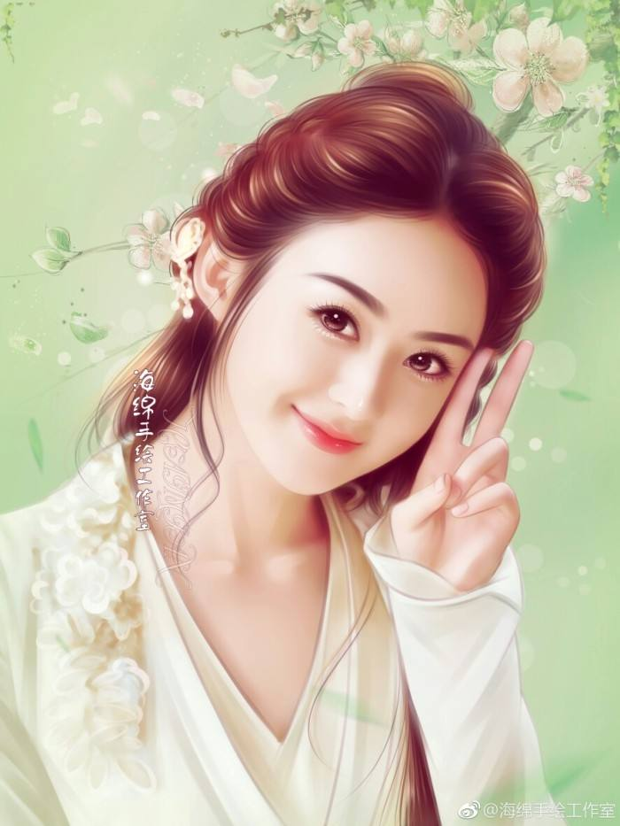

现在的古装剧，不管哪朝，汉人对自己父母的称呼都为爹娘，事实上这未必，称呼各朝都有差别，比如说南北朝隋唐时期称呼父亲为耶耶，称呼母亲为阿娘。
本宫顾名思义就是指一宫之主，也就是说只有一宫之主才能称本宫。比如说皇太极的五宫，分别是清宁宫皇后博尔济吉特氏，关雎宫宸妃博尔济吉特氏，麟趾宫贵妃博尔济吉特氏，衍庆宫淑妃博尔济吉特氏，永福宫庄妃博尔济吉特氏，也就是说只有这五宫的女人才有资格称本宫，剩余的皇太极的其他女人都没有这资格。大家可能都不知道，太子也能自称本宫，这是因为太子是东宫之主。因此本宫并不只是皇帝女人的专有称呼。至于现在的电视剧有的不是一宫之主的女人也自称本宫，是错误的。
各种朝代的历史剧中，在太监宣读皇帝圣旨时，开篇一句总会是“奉天承运，皇帝诏曰”。实际上，只有明清两代奉天指的是尊奉天命，承运指的是继承“五德”(金木水火土)的运行。所以“奉天承运”意为君权神授，君权是上天赐予的。 这里必须说明一点，圣旨开头为八个字，圣旨开头“奉天承运皇帝”六字是连续的，其余的两个字根据圣旨的内容和诏告对象的不同可分为三种，分别为诏曰，制曰和敕曰。 “诏曰”是诏告天下的意思，凡重大政事须告知天下臣民的，均使用“奉天承运皇帝诏曰”。 “制曰”是皇帝表达皇恩、宣示百官时使用的，“制曰”只为宣示百官之用，并不下达于普通百姓。 “敕曰”有告诫的意思，皇帝在给官员加官进爵时均会使用敕曰，意为告诫官员要勤于政务，勿贪图享乐，要忠于朝廷，勿结党私营，危害朝廷。
宫中女眷可不是寻常的女人，这些都是皇帝的亲人，太医给这些人看病时，那是无法当面诊脉的，那是必须在一个屏风外瞧病。 那么屏风外怎么瞧病呢？相信大家都应该听说过那就是悬丝诊脉。所谓悬丝诊脉指的是在古代男女授受不亲的情形下，在医生给女病人瞧病时，用一根丝线，丝线一端绑在女病人的手上，另外一端在医生手中掌握着，然后判断脉象，诊断病情。 当然，有点常识的人都知道，这是根本诊不到脉搏的。所以太医只有通过询问病人，以及花钱贿赂伺候病人的宫女太监，来得知病人的具体病症，这样才能够对症下药，治愈病人。 在森严的宫禁制度中，太医能够给妃嫔当面诊治并发生感情这种事，是不可能发生的。
番茄，土豆，辣椒，玉米，都是在明朝才传入中国的，但是现在的电视剧明朝前就有这些东西了。黄瓜，葡萄，核桃，石榴这些都是在两汉时期传入中国的。